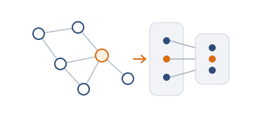

Graph learning
Public repository
GNN from Scratch
A from-scratch implementation of graph neural network foundations, including automatic differentiation, graph operations, GCN and GAT models, and reproducible experiments on Cora.
View repository